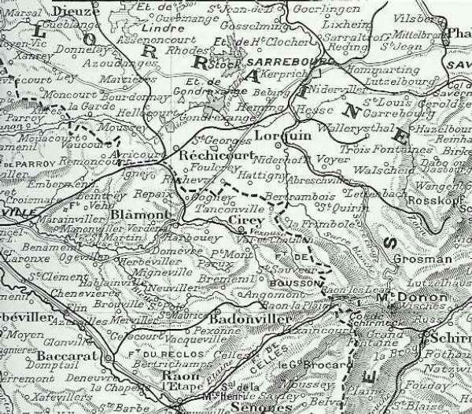

Région des Etangs
C’est le lieu de l’offensive française en Lorraine par les Ie et IIe armées.

Région des Etangs
Lieu de l’offensive française en Lorraine
C’est le lieu de l’offensive française en Lorraine par les Ie et IIe armées.
